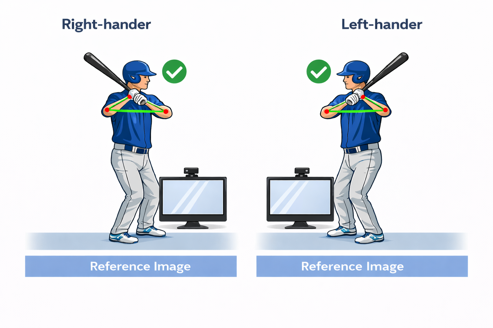

Batting Coach
Real-time stance feedback • Voice + camera
← Back
Setup
Handedness
Select
Right
Left
Setup help (tips + stance guide)
Stand sideways
(profile view).
Camera in front
of you at chest height.
Step back
6–8 feet
.
Avoid bright windows behind you.

Rear
Front
Start
Stop
Loading…
Preparing camera + pose model
Assistant
One fix at a time
Record
Tap to record a short clip (iOS fallback for voice). On Android/Chrome real-time voice may still work.
Good job
—
One thing to work on
—
More details
Response
—
You said
—
Debug
Show